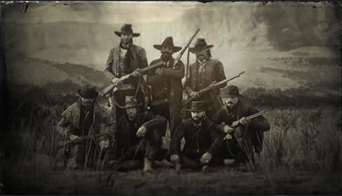

Bandes
Informations concernant les repaires des bandes les plus célèbres. Vous pourrez ainsi identifier les membres que vous rencontrerez.

The charismatic leader of the Van der Linde gang, Dutch is a compelling but enigmatic figure. He is idealistic in his pursuit of freedom and self-sufficiency but becomes increasingly disillusioned as the gang's situation deteriorates. Dutch's leadership style and moral ambiguity are central themes in the game.

The protagonist of the game, Arthur is an outlaw and a senior member of the Van der Linde gang. He is fiercely loyal to Dutch Van der Linde, the gang's leader, and serves as his right-hand man. Arthur is a complex character who grapples with his past and his role in a changing world.

Although not the protagonist in this game, John Marston plays a significant role as a central figure in the Van der Linde gang. He is a former outlaw trying to leave his criminal past behind and build a better life for his family. Players gain insights into John's character and backstory throughout the game.

John Marston's wife and the mother of his son, Jack. Abigail is a strong-willed and resourceful woman who cares deeply for her family. She plays a vital role in supporting John and helping him leave his outlaw past behind.
A newer member of the gang, Micah is a volatile and unpredictable presence. He often clashes with Arthur and other members of the gang due to his reckless behavior and lack of loyalty. Micah's motives and loyalties are frequently called into question as the story unfolds.

A newcomer to the gang, Sadie is a fierce and independent woman seeking revenge for the murder of her husband. She proves herself to be a capable and determined ally to Arthur and the gang, despite her traumatic past.

A skilled tracker and hunter, Charles is a calm and level-headed member of the gang. He forms a close bond with Arthur and serves as a trusted friend and ally throughout the game.
Uncle is an elderly member of the gang known for his laziness and love of alcohol. Despite his flaws, he is considered part of the family and contributes in his own way to the gang's activities.
Informations concernant les animaux que vous pouvez rencontrer au cours de votre aventure : les régions où ils vivent, la meilleure façon de les chasser et la façon dont vous pouvez les utiliser pour fabriquer des objets.

Informations concernant l'ensemble des pièces d'équipement disponibles : les éléments les mieux adaptés aux différentes situations et les améliorations possibles.
Informations concernant la pêche : les meilleures zones de pêches du pays, les différents leurres et appâts à utiliser en fonction des espèces et les moments de la journée jour où elles sont les plus actives.
Informations concernant les repaires des bandes les plus célèbres. Vous pourrez ainsi identifier les membres que vous rencontrerez.
Informations sur la flore : les zones où poussent les différentes plantes, leurs propriétés, la façon de les utiliser (plantes décoratives ou plantes à utiliser comme ingrédient pour fabriquer des objets).
Informations sur les différentes races de chevaux. Vous pourrez ainsi déterminer quel type de cheval est le mieux adapté à votre style de vie.
Informations sur les différentes armes disponibles : quelles armes choisir en fonction de vos besoins, leurs statistiques et les munitions adéquates.

Cartes de paquets de cigarettes
Informations sur les douze séries de cartes de paquets de cigarettes à collectionner. Chaque série comprend douze cartes uniques et informatives.